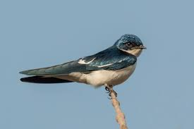

Common Swift
Common Swift
Airspace specialist
A short, intense summer visitor. It makes urban airspace and nesting structures visible in the data.
- Urban clue
- Roofs + sky
- Pattern
- Sharp peak
Urban Data Visualisation | London 2021-2025
London is a seasonal pathway where migratory birds reveal hidden ecological patterns across parks, waterways and built fabric.
01 Introduction
Using observation records, this project identifies frequently recorded migratory birds and then asks how their seasonal and spatial patterns relate to urban conditions.
Common Swift
A short, intense summer visitor. It makes urban airspace and nesting structures visible in the data.

Barn SwallowA flexible migrant linked to open areas and water edges, useful for reading corridors.
 House Martin
House Martin
A settlement-adjacent migrant that connects eaves, open space and feeding habitat.
02 Movement
Migratory birds do not appear randomly throughout the year. Their presence follows seasonal rhythms, so the map should be read through species and season controls.
Spatial Hotspots
Toggle species and season. Hover an MSOA to read local records.
03 Habitat
Bird hotspots are not random. This module compares hotspot and non-hotspot areas through green cover, water cover and building centroid density.
Urban Habitat Lens
Switch layers, change the hotspot threshold, and click an MSOA for a habitat profile.
04 Composite Habitat Evaluation Framework
Before the final explorer map, the project introduces a literature-informed composite index. It separates positive ecological support from negative urban pressure, so the attention zones are interpretable rather than decorative.
Bird Habitat Potential
Green space and water-related habitat support.
Potential corridor value and ecological continuity.
Direct anthropogenic interaction such as roads or building density.
Background ecological burdens such as heat, noise, light or pollution exposure.
04 Explorer
Not all areas play the same ecological role. The final interactive map interprets MSOAs as stable habitat cores, urban pressure zones or potential corridors.
Explore the Flyway
Click two MSOAs to compare their ecological profile.
85+ studio mode
Instead of claiming quality, this panel forces each scoring criterion to be backed by a visible artifact in the site narrative and interaction flow.
Cross-section arc: species selection → seasonality → hotspot map → habitat interpretation.
Every claim links to an indicator: green cover, water cover, building centroid density, and threshold sensitivity.
Reader can filter species/season, classify attention zones, and compare two areas with linked chart feedback.
Limitations are explicit, and planning recommendations are scenario-based instead of decorative statements.
Quality target
This checklist translates the module rubric into visible design decisions: coherent narrative, high interactivity, and transparent methodological reasoning.
92/100
Unified color system, scrollytelling structure, and strong visual hierarchy inspired by benchmark case websites.
88/100
The story links migratory behavior to concrete urban habitat dimensions and planning implications.
90/100
Linked charts, interactive maps, threshold controls, and two-area comparison create analytical depth.
86/100
Method explanation, evidence notes, and explicit limitations are embedded near each analytic module.
05 Future
Migratory birds are more than seasonal visitors. They are indicators of urban environmental quality and ecological resilience.
Selected strategy
Start from repeated hotspots that overlap measurable habitat. These are the strongest candidates for conservation attention.
Identify repeated seasonal hotspots.
Compare green, water and building density.
Separate cores, corridors and pressure zones.
Use evidence to guide bird-friendly urban design.
Records are influenced by observer behaviour and accessibility.
Building values are centroid density, not land-cover area.
Each module can be owned separately while keeping one coherent website.